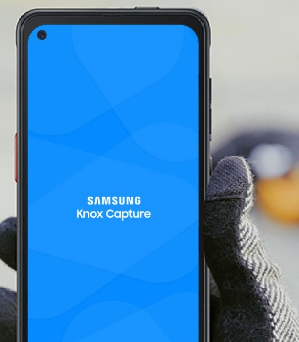

Knox Capture
Last updated April 23rd, 2025
Knox Capture is an Android solution that lets enterprise IT admins transform their organization's Samsung Galaxy smartphones and tablets into powerful barcode scanners that can read, process, and output barcode information to other applications, all without requiring additional hardware or writing a single line of code.

Supported devices and countries
Knox Capture is only available for select Android devices, and in certain countries.
- For the most up-to-date list of devices that Knox Capture supports, see Devices Secured by Knox.
- For a list of countries that Knox Capture currently supports, see Supported locations.
Unsupported devices
The following Samsung 32-bit devices are not supported by Knox Capture:
- A series: A01, A02s, A03Core, A04s, A11, A13, A13-5G
- F serieis: F02s, F13
- M series: M02s, M01, M11, M13, M13-5G
What’s new with Knox Capture
Stay up-to-date with the latest Knox Capture product information and content updates.
Latest release notes
- Knox Capture v2.3 — April 23, 2025
- Knox Capture v2.2 — Dec 30, 2024
- Knox Capture v2.1 — Oct 10, 2024
- Knox Capture v2.0 — July 2, 2024
Latest content updates
New pages:
Updated pages:
On this page
Is this page helpful?